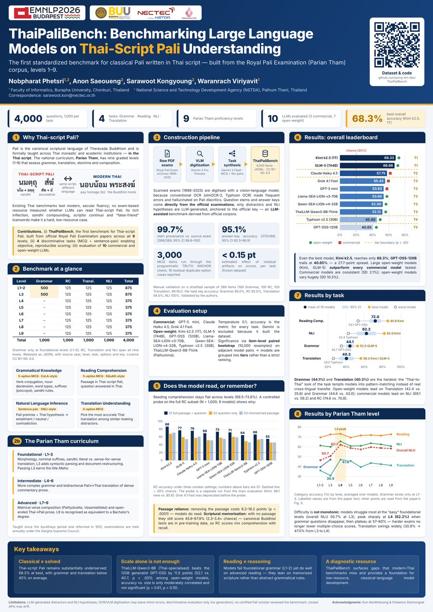

Abstract
The application of large language models (LLMs) to Pali written in the Thai script remains limited in accuracy due to its low-resource setting, complex grammar, and the absence of standardized evaluation benchmarks. In this paper, we introduce ThaiPaliBench, a comprehensive benchmark dataset designed to systematically evaluate LLM proficiency in Thai-script Pali. Our proposed dataset is an LLM-assisted benchmark derived from the Royal Pali Examination corpus and spans Parian Tham levels 1–9. ThaiPaliBench comprises multiple-choice and sentence-pair tasks that evaluate grammatical knowledge, reading comprehension, natural language inference, and translation understanding. To verify the effectiveness of our benchmark, we evaluate over 10 model variants across 3 commercial and open-source LLM families, including ChatGPT, Claude, Kimi, Grok, Typhoon, GPT-OSS-120B, ThaiLLM, and SEA-LION. Our experiments show that even the best-performing model, Kimi K2.5 (1T), achieves only 68.3% overall accuracy, with performance dropping substantially on grammatical reasoning and semantic inference tasks. These results highlight the unique challenges posed by Thai-script Pali and confirm that ThaiPaliBench serves as a reliable, linguistically grounded benchmark for evaluating LLM proficiency in this low-resource language.
Why Thai-script Pali?
Pali is the canonical scriptural language of Theravada Buddhism and is formally taught across Thai monastic and academic institutions — in the Thai script. The national curriculum, Parian Tham, has nine graded levels (1–9) that assess grammar, translation, doctrine and composition.
THAI-SCRIPT PALI
different language
MODERN THAI
Existing Thai benchmarks test modern, secular fluency; no exam-based resource measured whether LLMs can read Thai-script Pali. Its rich inflection, sandhi compounding, scriptio continua and “false-friend” loanwords make it a hard, low-resource case.
The benchmark
Items per level and task
| Level | Grammar | RC | Transl. | NLI | Total |
|---|---|---|---|---|---|
| L1–2 | 500 | 125 | 125 | 125 | 875 |
| L3 | 500 | 125 | 125 | 125 | 875 |
| L4 | – | 125 | 125 | 125 | 375 |
| L5 | – | 125 | 125 | 125 | 375 |
| L6 | – | 125 | 125 | 125 | 375 |
| L7 | – | 125 | 125 | 125 | 375 |
| L8 | – | 125 | 125 | 125 | 375 |
| L9 | – | 125 | 125 | 125 | 375 |
| Total | 1,000 | 1,000 | 1,000 | 1,000 | 4,000 |
Grammar is tested only at the foundational levels (L1–3); RC, Translation and NLI span all nine levels.
The Parian Tham curriculum
Taught since the Ayutthaya period and reformed in 1912; examinations are held annually under the Sangha Supreme Council.
Verb conjugation, noun declension, word types, suffixes (paccaya), sandhi rules.
Passage in Thai-script Pali, question answered in Thai.
Pali premise + Thai hypothesis → entailment / neutral / contradiction.
Pick the most accurate Thai translation among similar-looking distractors.
How it was built
Scanned exams (1986–2025) are digitised with a vision–language model, because conventional OCR (olmOCR-2, Typhoon OCR) made frequent errors and hallucinated on Pali diacritics. Question stems and answer keys come directly from the official examinations; only distractors and NLI hypotheses are LLM-generated, anchored to the official key — an LLM-assisted benchmark derived from official corpora.
Manual validation on a stratified sample of 389 items (100 Grammar, 100 RC, 100 Translation, 89 NLI). Per-task key accuracy: Grammar 95.0%, RC 92.0%, Translation 94.0%, NLI 100%.
Evaluation setup
Commercial: GPT-5 mini, Claude Haiku 4.5, Grok 4.1 Fast.
Open-weight: Kimi k2.5 (1T), GLM-5 (744B), GPT-OSS (120B), Llama-SEA-LION-v3-70B, Qwen-SEA-LION-v4-32B, Typhoon v2.5 (30B), ThaiLLM-Qwen3-8B-Think (Pathumma).
Temperature 0.1; accuracy is the metric for every task. Gemini is excluded because it built the dataset. Significance via item-level paired bootstrap (10,000 resamples) on adjacent model pairs, so models are grouped into tiers rather than a strict ranking.
Results
Overall leaderboard
By task
Grammar (44.1%) and Translation (40.3%) are the hardest: the “Thai-to-Thai” look of the task tempts models into pattern-matching instead of real cross-lingual transfer. Open-weight models lead on Translation (42.4 vs. 35.6) and Grammar (44.6 vs. 43.0); commercial models lead on NLI (69.1 vs. 59.2) and RC (74.6 vs. 70.8).
By Parian Tham level
Difficulty is not monotonic: models struggle most at the “easy” foundational levels (overall NLU 50.7% at L3), peak at L4 (62.2%) when grammar questions disappear, then plateau at 57–60%. Translation swings widely (30.9% → 47.0% from L3 to L4). Labelled values are from the paper text; other points are read from the paper’s Fig. 5.
Does the model read, or remember?
Reading comprehension stays flat across levels (69.5–73.8%). A controlled probe on the full RC subset (N = 1,000; 9 models) shows why.
RC accuracy under three context settings; numbers above bars are S1. Dashed line = 20% chance. The probe is a separate run from the main evaluation (Kimi: 86.1 here vs. 85.8); Grok 4.1 Fast was deprecated before the probe.
Key takeaways
Get the data
The dataset is released on GitHub as JSON Lines under CC BY-NC 4.0. Grammar, RC and Translation use five-option multiple choice; NLI uses Pali-premise / Thai-hypothesis pairs.
git clone https://github.com/ainrg-llm-dev/ThaiPaliBench.gitMultiple-choice item
{
"filename": "12-PW-23.pdf",
"โจทย์": "\"มาน\" ปัจจัย (กิริยากิตก์) จะเป็น \"กัมมวาจก\" ได้เมื่อใด?",
"ก": "เมื่อเป็นปัจจัยของอานที่ไม่มีอิ อาคม",
"ข": "เมื่อมี อ ปัจจัย (และอิ อาคม) แต่ไม่มี ย ปัจจัย",
"ค": "เมื่อมี ย ปัจจัย (และอิ อาคม)",
"ง": "เมื่อไม่มี ย ปัจจัยแต่มี ส ปัจจัยที่เป็นอิ อาคม",
"จ": "เมื่อเป็นธาตุสกัมมกะที่ไม่มีอิ อาคม",
"เฉลย": "ค",
"อธิบาย": "ถ้ามี ย ปัจจัย (ซึ่งลงในกรรม) เป็นกัมมวาจก"
}โจทย์ question · ก–จ options · เฉลย answer key · อธิบาย explanation
NLI pair
{
"pali": "ปณฺฑิตปุริสา หิ ปุญฺญํ กโรนฺตา วิวฏมุขภาชนํ วิย อุทเกน อนุปุพฺเพน ปุญฺเญน ปูรนฺติเยวาติ ...",
"thai": "เหล่าบัณฑิตสะสมบุญจนเต็มเปี่ยมเหมือนภาชนะเปิดปากรับน้ำ ...",
"label": 1,
"type": "neutral"
}label: 0 entailment · 1 neutral · 2 contradiction
Load in Python
import json, glob
def load(pattern):
rows = []
for path in sorted(glob.glob(pattern)):
with open(path, encoding="utf-8") as f:
rows += [json.loads(line) for line in f if line.strip()]
return rows
rc = load("ThaiPaliBench/RC/*.jsonl") # Reading Comprehension MCQ
nli = load("ThaiPaliBench/NLI/*.jsonl") # Pali premise / Thai hypothesis pairs
print(len(rc), len(nli))Poster

Presented in person at EMNLP 2026 (Findings), Budapest, Hungary.
Download poster (A0 PDF, 1.7 MB)
Citation
If you use ThaiPaliBench, please cite:
@inproceedings{phetsri-etal-2026-thaipalibench,
title = "{T}hai{P}ali{B}ench: Benchmarking Large Language Models on {T}hai-Script {P}ali Understanding",
author = "Phetsri, Nobpharat and
Saeoueng, Anon and
Kongyoung, Sarawoot and
Viriyavit, Waranrach",
editor = "Lee, Hung-Yi and
Dev, Sunipa and
Li, Jessy and
Elliott, Desmond",
booktitle = "Findings of the {A}ssociation for {C}omputational {L}inguistics: {EMNLP} 2026",
month = oct,
year = "2026",
address = "Budapest, Hungary",
publisher = "Association for Computational Linguistics",
url = "https://aclanthology.org/2026.findings-emnlp.1278/",
pages = "27072--27099",
ISBN = "979-8-89176-462-0"
}